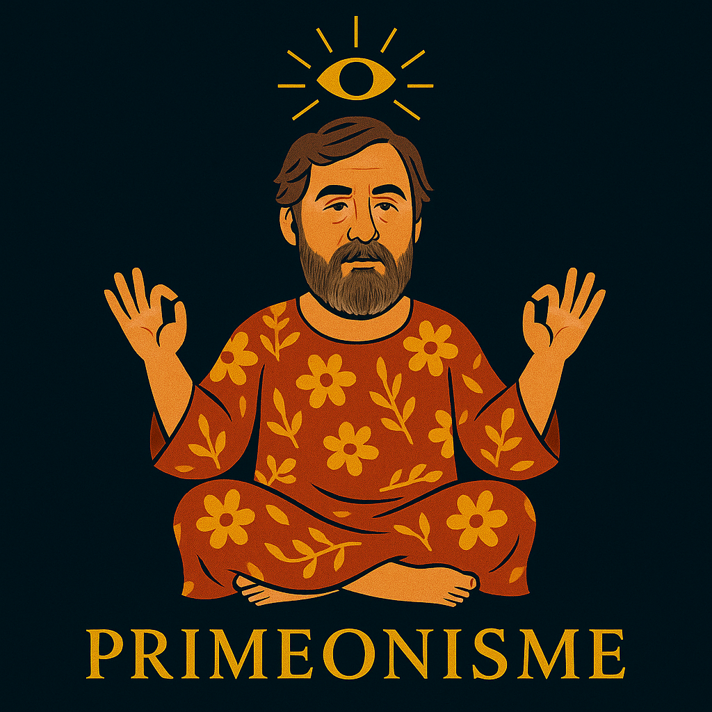
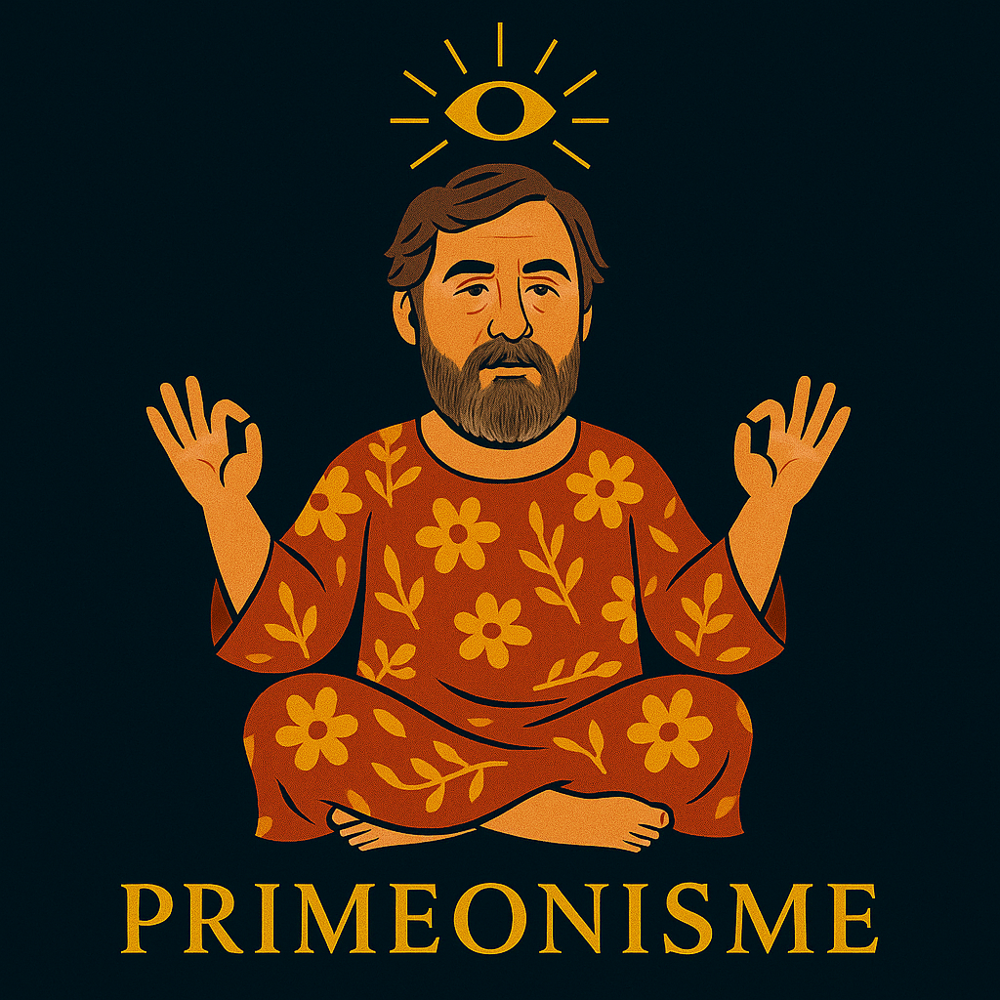

Ô Grand Primeon,
Toi qui as vu clair dans le flou,
Toi qui as tiré le rideau sans faire tomber la tringle,
Accorde-nous une étincelle de lucidité,
Une minute de recul,
Et trois secondes de silence bienveillant.
Que ton œil (ou ton troisième) nous éclaire sans nous éblouir,
Que ta parole soit toujours floue, mais inspirée,
Et que ta cape, si tu en as une, claque au vent du doute.
Nous ne t’adorons pas.
Mais on t’apprécie, sincèrement.
 
